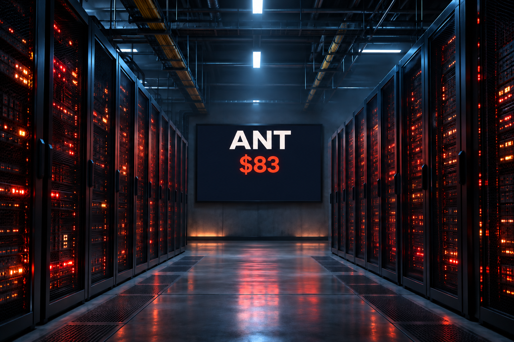
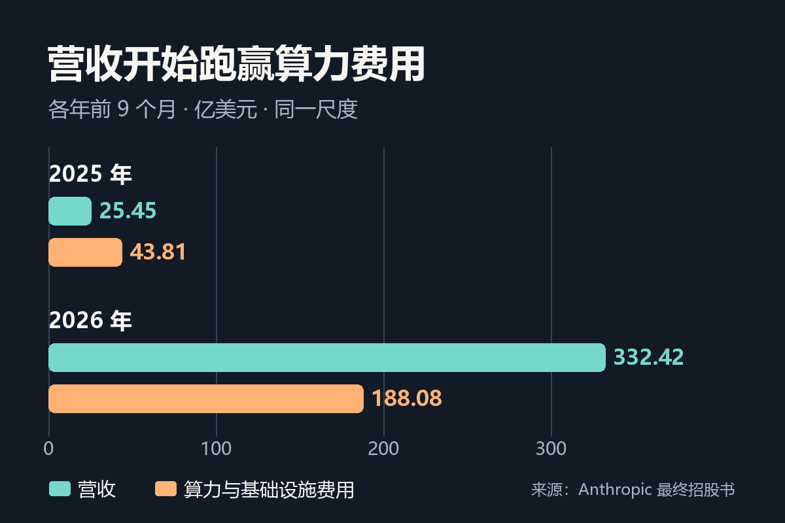

AI 生成概念图。83 美元是发行价。
813.4 亿美元。 这是 Anthropic 以每股 83 美元、发行 9.8 亿股算出的基础 IPO 总额。11 月 19 日，做出 Claude 的这家公司以 ANT 为代码登陆纳斯达克。
往招股书里再翻几页，会看到一个大约是它 11 倍 的数字：9009 亿美元。这是 Anthropic 披露的采购和租赁承诺总额，几乎全部与算力和基础设施有关。其中约 4516 亿美元预计在 2030 年底前发生，其余绝大部分分布在 2031 至 2045 年。
把这两个数字摆在一起，AI 公司的生意忽然具体了：你在窗口里发一条消息，背后的服务器可能早在一年多前就订下了。
813.4 亿美元里，有多少是 Anthropic 自己卖的？
793.77 亿美元来自 Anthropic 出售的新股，约 19.63 亿美元来自原股东出售的股份。两个数字都按 83 美元的发行价计算，未扣费用。公司同期还有一笔 260 亿美元的私募配售。按最终招股书估算，合并计算公司发行部分与同期私募、扣除承销费用等之后，净募资约 1048 亿美元。
招股书列出的用途包括扩充算力和基础设施。Anthropic 说，算力往往要在可用前 12 至 18 个月采购。客户的用量按天变，机房和芯片得按年订。这段时间差，正是那笔巨额承诺的分量。
算力费用变成 4.3 倍，营收变成 13.1 倍
对比两个年份的前九个月，营收从 25.45 亿跳到 332.42 亿美元，约为原来的 13.1 倍。同期算力与基础设施费用从 43.81 亿升到 188.08 亿美元，约为原来的 4.3 倍。

同一尺度，单位为亿美元。图表据 SEC 最终招股书绘制。
每取得 100 美元营收，2025 年同期对应的算力与基础设施费用约 172 美元，2026 年同期降到了 57 美元。这笔费用覆盖研究、训练和服务用户等多种工作，仍是最大的一项经营费用。
模型端也在做同一件事：把一次任务做便宜
上市前十天，Anthropic 发布了 Claude Fable 5.2。它把标准 API 价格从上一代的 每百万输入／输出 token 10／50 美元，降到了 8／40 美元。两项都降了 20%。
Anthropic 自测的 FrontierCode 2.0 更直观。Fable 5.2 在 High 档拿到 45.3%，Opus 5.5 在 Max 档拿到 45.5%。 分差只有 0.2 个百分点，Fable 5.2 的平均任务成本约为后者的一半。该测试评估代码更改能否达到开源维护者的合入要求，数字对应厂商的评测配置。
Anthropic 已经把未来多年的算力订下了。接下来更值得追的，是每一代 Claude 能用同样的预算，多做成多少件事。
主要出处 纳斯达克上市记录 · SEC 最终招股书 · Anthropic Fable 5.2 发布说明